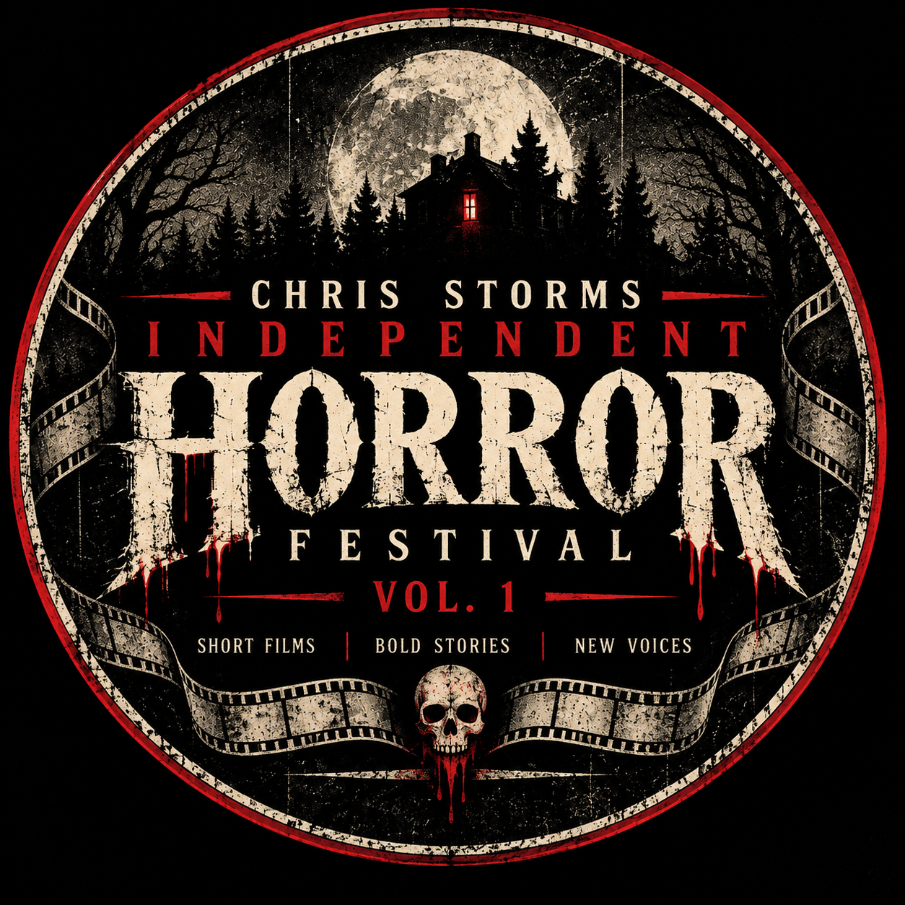

VOL. 1 · 18. DEZEMBER 2026
Ein Online-Festival für unabhängige Horrorfilmemacher, mutige Geschichten und neue Stimmen aus aller Welt.
Film einreichen RegelnChris Storm Independent Horror Festival ist ein Online-Horror-Kurzfilmfestival, das unabhängige Filmemacher und ihre eigenen Visionen feiert.
No-Budget, Low-Budget und Independent-Produktionen sind willkommen. Entscheidend sind Kreativität, Atmosphäre und die Geschichte – nicht die Größe des Budgets.
Psychologischer Horror, Übernatürliches, Found Footage, Creature Horror, Experimental, Dark Comedy und mehr.
Produktionen mit kleinen Budgets sind ausdrücklich willkommen.
Filmemacher aus der ganzen Welt können teilnehmen.
€0,00 — Vol. 1
Eine dreiköpfige Jury aus Film-Liebhabern bewertet die ausgewählten Kurzfilme. Bewertet werden unter anderem Kreativität, Storytelling, Atmosphäre, Regie und Gesamteindruck.
Chris Storm ist eines der drei Jury-Mitglieder.
Die beiden weiteren Jury-Mitglieder werden vom Festival bekannt gegeben.
01.09.2026
31.10.2026
13.11.2026
28.11.2026
18.12.2026
ONLINE
Reiche deinen Kurzfilm ein und werde Teil von Vol. 1.
Zu den Einreichungen